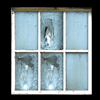

Following is a list of all light source objects that can be found in classrooms:

Window
Easily visible even in the darkness, windows can be shattered with
slingshot pellets or cherry bombs. When shattered, a window will spill a beam of
light across the entire room. Windows cannot be un-broken, and their light will
remain in all puzzle rooms indefinitely. Windows do not contribute to the Light
Meter, since they require no electricity.
 Lamp
Lamp
The lamp can be turned on and off, creating a medium-sized circle of
light around itself. Each lamp must be turned on and off individually.
 Television
Television
The television cannot be turned on directly. Instead, the player
must locate the TV remote in order to turn the television on remotely. The
television creates a small orb of light directly in front of its screen. When
multiple televisions are in one room, using the TV remote will cycle between them.
 PC Monitor
PC Monitor
The computer monitors are all linked together on a network.
Turning on one PC monitor also turns on all other monitors in the room, as does
turning one off. Because of this, PC monitors can fill up the Light Meter rather
quickly. PC monitors can also tend to short out. If a monitor’s light begins to
flicker, the player should get out of the way to prevent getting caught in the
darkness. No more than one PC monitor will short out at a time, and any monitor
that shorts out will turn on again after a few seconds.
Oscillating Light
The oscillating light operates similarly to an oscillating
table fan. It rotates back and forth at a slow, steady speed and stops for a few
seconds each time it reaches its end, before rotating back in the opposite
direction. The oscillating light creates a large beam similar in shape to the one
from Jake’s flashlight, which can be travelled across the room with. When an
oscillating light is turned off, it will resume its rotation from that spot the next
time it is turned on.
 Motion Sensor
Motion Sensor
The motion sensor creates a huge circle of light underneath it
anytime Jake or a projectile comes within a few feet of it. Once activated, the
light will remain on for 10 seconds before it begins to flicker off. After the
motion sensor has shut off, it can be reactivated, however it is not possible to
keep the motion sensor lit for more than 10 seconds continuously.